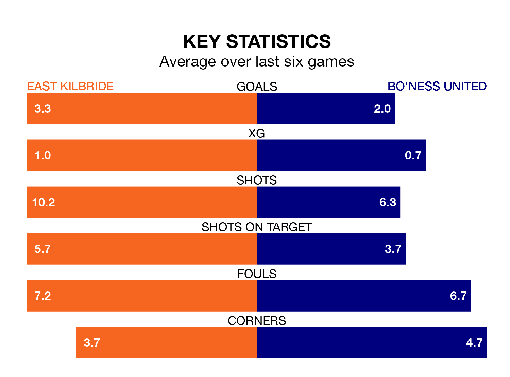

Two of the Lowland Football League's top sides face each other at K Park Training Academy in Saturday's kick-off, when table-topping East Kilbride host fourth-placed Bo'ness United.
East Kilbride have picked up 22 wins and three draws from 28 games so far this season, and sit 14 points above the visitors going into the 3pm match.
Bo'ness, meanwhile, have won 17 and drawn four of 29, picking up 55 points.
With 83 goals in 28 games so far this season, East Kilbride are the league's highest scorers with 3.0 goals per game. And they are conceding fewer than average, letting in 34 goals at a rate of 1.2 per game.
Bo'ness are also above average scorers, with 2.0 goals per game, compared to a league average of 1.7. They have conceded 1.4 goals per game.
In the last 10 years, East Kilbride and Bo'ness have played each other on eight occasions. East Kilbride won six of them and they drew twice.
On average, the Kilby scored 2.6 goals and Bo'ness 0.8 in those matches.
Their last meeting was on March 5, when East Kilbride won 3-0 at home.
The Kilby are in fantastic form in the Lowland Football League, with five wins and one loss from their last six games.
With three wins and a draw over that period, United's form is worse – they have taken 10 points from 18, compared to the hosts' 15.
East Kilbride's last match was on March 9, a 2-0 win against East Stirlingshire.
Bo'ness beat Civil Service Strollers 3-2 last time out, also on March 9.
Updated: 15:10 (UTC), 15/03/24